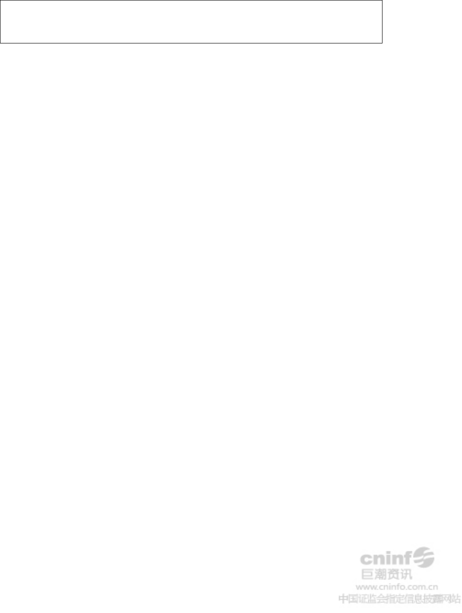

证券代码：002570 证券简称：贝因美 公告编号：2012-028
浙江贝因美科工贸股份有限公司
关于控股股东增持公司股份的进展公告
本公司及董事会全体成员保证信息披露内容的真实、准确和完整，没有虚
假记载、误导性陈述和重大遗漏。
公司于2012年5月2日披露了《浙江贝因美科工贸股份有限公司关于控股股
东增持公司股份的公告》，详情参见2012年5月3日的《上海证券报》、《证券时
报》及巨潮资讯网（http://www.cninfo.com.cn）。
2012 年6月28日，公司收到控股股东贝因美集团有限公司（以下简称“贝因
美集团”）《关于增持浙江贝因美科工贸股份有限公司股份之通知》，贝因美集
团根据后续增持计划，于 2012 年4月28日～2012 年6月28日通过深圳证券交易
所证券交易系统合计增持公司2,521,837股，增持平均价格为21.16元，占公司总
股本的0.59%。
本次增持前，贝因美集团共持有本公司164,923,250 股，占公司股份总数的
38.71%。本次增持后，贝因美集团持有公司股份数量为167,445,087股，占公司
总股本的39.30%。
根据后续增持计划，贝因美集团将视市场情况，存在继续通过深圳证券交易
所交易系统择机增持公司股份的可能，但连续12个月内累计增持比例将不会超过
公司已发行总股份的2%（含已增持的部分）。
公司将继续关注控股股东贝因美集团增持公司股份的有关情况，并依据相关
规定及时履行信息披露义务。
特此公告。
浙江贝因美科工贸股份有限公司
董事会
2012 年6月28 日